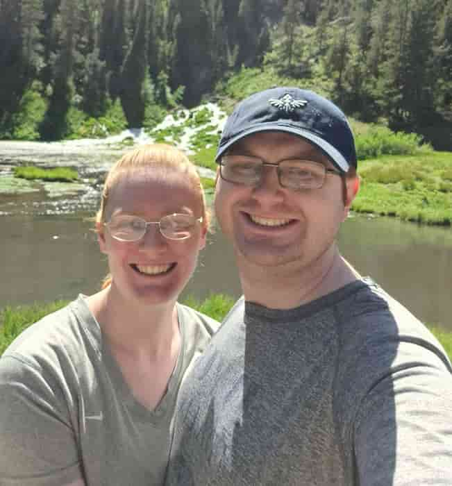

About Me
My name is Eric Hogan. I was born in Whitefish, Montana and currently live in Rexburg, Idaho width my wife Breanna. Currently I work in a call center handling the billing for a pest control company. One day my dream is to work as a software developer and to assist my wife with building a sewing buisness. Some of my favorite things to do are going into the woods and camp and to play disc golf (at seperate times of course).
Rexburg Idaho is the home of Brigham Young University - Idaho (BYU-I). BYU-I used to be known as Ricks College however the school was changed into a university in 2001 under the direction of David A. Bednar who was the shcools president at the time.